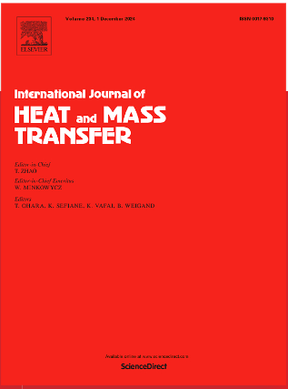
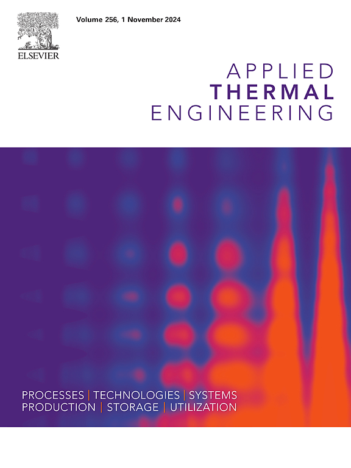
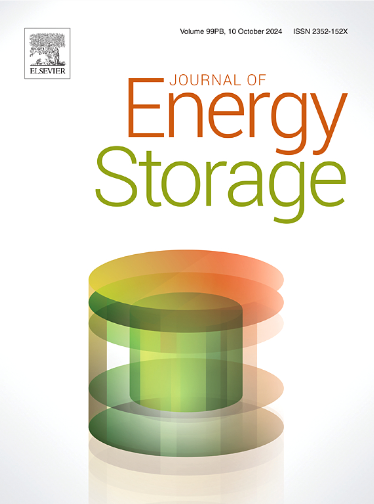
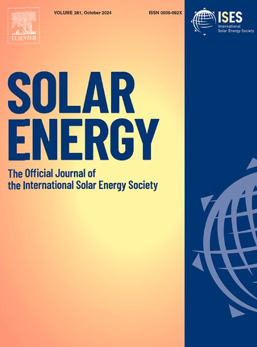
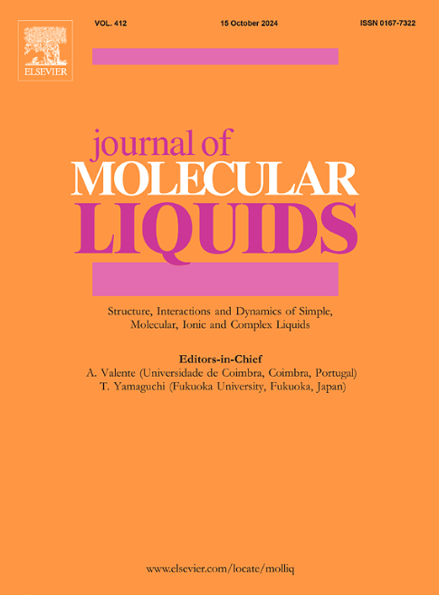
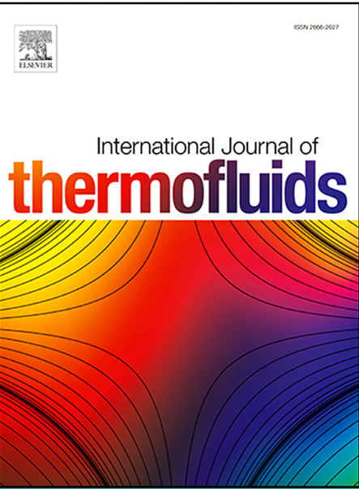
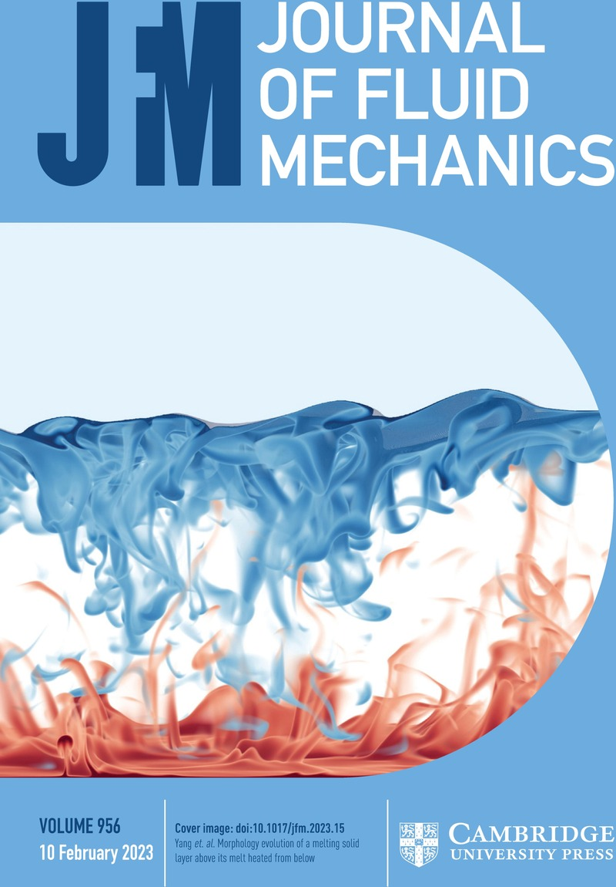

Check out my Google Scholar for the latest publications.
Publications
[1] J. Ranjbar Kermani, P. Poureslami, S. Faghiri, M.B. Shafii, Ultra-fast solidification of phase change materials using the injection of boiling fluid, International Journal of Heat and Mass Transfer, 229 (2024) 125697 doi: https://doi.org/10.1016/j.ijheatmasstransfer.2024.125697.
[2] J. Ranjbar Kermani, S. Faghiri, M.B. Shafii, A novel approach for solidification enhancement of phase change materials through direct contact with a boiling fluid: An experimental investigation and visualization, Applied Thermal Engineering, (2024) 124211, doi: https://doi.org/10.1016/j.applthermaleng.2024.124211.
[3] J. Ranjbar Kermani, M. Mahlouji Taheri, M.B. Shafii, A. Moosavi, Analytical solution, optimization, and design of a phase change cooling pack for cylindrical lithium-ion batteries, Applied Thermal Engineering, 232 (2023) 120963, doi: https://doi.org/10.1016/j.applthermaleng.2023.120963.
[4] J. Ranjbar Kermani, M. Mahlouji Taheri, H. Pakzad, M. Minaei, M.A. Bijarchi, A. Moosavi, M.B. Shafii, Hybrid battery thermal management systems based on phase transition processes: A comprehensive review, Journal of Energi Storage, 86 (2024) 111227, doi: https://doi.org/10.1016/j.est.2024.111227.
[5] M. Minaei, S. Faghiri, J. Ranjbar Kermani, A. Riahi, M.B. Shafii, A novel solar-driven vacuum desalination unit: Simultaneously venturi-induced self-evaporation and self-condensation withfresh water cycle, Solar Energy, 282 (2024) 112889, doi: https://doi.org/10.1016/j.solener.2024.112889.
[6] A. Najafpour, K. Hosseinzadeh, J. Ranjbar Kermani, A.A. Ranjbar, D. Domiri, Numerical study on the impact of geometrical parameters and employing ternary hybrid nanofluid on the hydrothermal performance of mini-channel heat sink, Journal of Molecular Liquids, 393 (2024) 123616, doi: https://doi.org/10.1016/j.molliq.2023.123616.
[7] M. Paikar, K. Hosseinzadeh, J. Ranjbar Kermani, D. Domiri, Hydrothermal assessment of a double-pass shell and tube heat exchanger in the presence of blade turbulators with different configurations, International Journal of Thermofluids, 21 (2024) 100577, doi: https://doi.org/10.1016/j.ijft.2024.100577.
[8] K. Hosseinzadeh, S. Faghiri, S. Akbari, J. Ranjbar Kermani, B. Jafari, M.B. Shafii, Effect of ternary hybrid nanoparticles (GO-MgO-TiO2) and radiative heat transfer on the solidification process of PCM inside a triplex tube with hollow fins, International Journal of Thermofluids, 20 (2023) 100443, doi: https://doi.org/10.1016/j.ijft.2023.100443.
Under Review
[9] P. Poureslami, M. Majidi, J. Ranjbar Kermani, M.A. Bijarchi, Deformation and breakup of ferrofluid compound droplet migrating in a microchannel under a magnetic field: A phase-field-based multiple-relaxation time lattice Boltzmann study (Under 1st revision in Journal of Fluid Mechanics), arXiv preprint arXiv:2410.11129, https://arxiv.org/abs/2410.11129.
Conference papers
[1] J. Ranjbar Kermani, S. Faghiri, M. Minaei, M.B. Shafii, Accelerating the solidification process of PCMs using the injection of a boiling fluid: An experimental study (In Persian), 32nd Annual International Conference of Mechanical Engineering, Tehran, Iran, 2024.
[2] M. Minaei, S. Faghiri, J. Ranjbar Kermani, M.B. Shafii, Experimental study of low-pressure desalination system with solar vacuum tube (In Persian), 32nd Annual International Conference of Mechanical Engineering, Tehran, Iran, 2024.